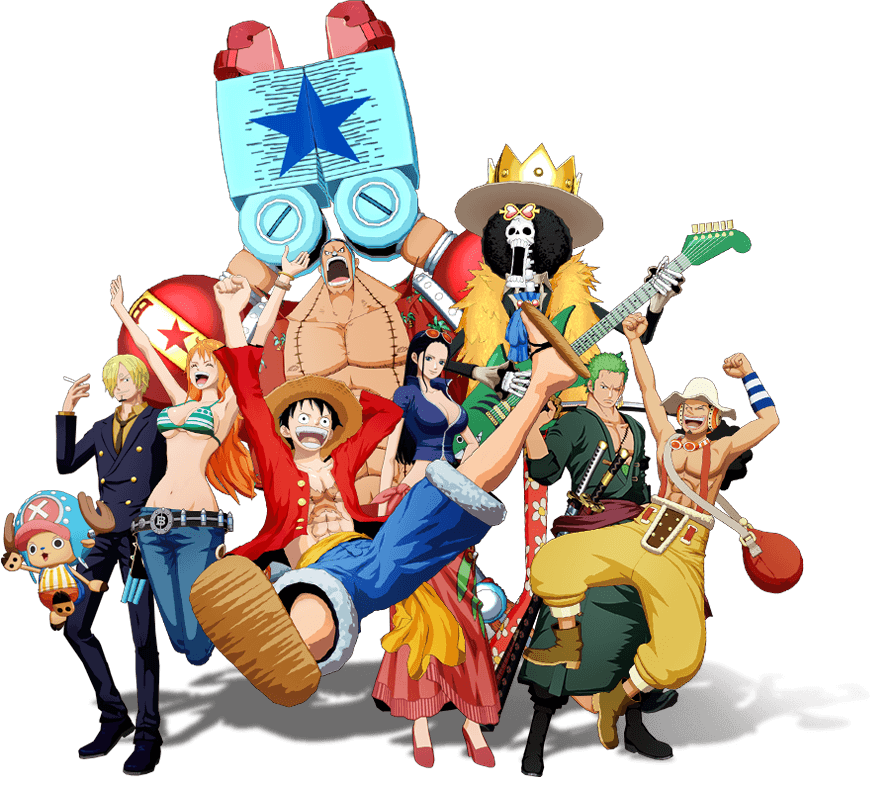

LogPose um site que te da a experiência de explorar um pedaço do mundo de One piece! de forma interativa com um QUIZ e informações do Anime!

LogPose um site que te da a experiência de explorar um pedaço do mundo de One piece! de forma interativa com um QUIZ e informações do Anime!
Se você não correr riscos, você não pode criar um futuro - Luffy
One Piece surgiu em 1997, com a publicação do primeiro capítulo do mangá na revista Weekly Shōnen Jump, escrita e ilustrada por Eiichiro Oda. Originalmente, a ideia era de uma história de pirataria com uma duração limitada, mas o sucesso e a popularidade do mangá e do anime que o seguiu levaram a uma história muito mais longa e complexa.
.png)

A jornada de One Piece, narrada em mangá e anime, acompanha os Piratas do Chapéu de Palha, liderados por Luffy, em sua busca pelo tesouro One Piece e pela conquista de seu lugar como a tripulação mais forte e famosa no mundo de piratas. Essa jornada é dividida em sagas, arcos e episódios, cada um com seu próprio foco e desafios.
Meu nome é Emanuelle, sou uma garota que gosta de arte, de apreciar coisas belas e viver momentos novos que me fazem sentir viva. One Piece entrou na minha vida quando eu mais precisava, ele não é só um anime mas foi um lugar onde encontrei motivação para continuar quando tudo parecia pesado. Me inspirando a seguir em frente e buscar o meu próprio caminho.
O logpose representa isso, a minha vontade de ir em busca do meu próprio destino, de seguir meu próprio rumo.
Se sente o mesmo bem vindo a tripulação!
Criar esse site foi um grande desafio. No começo, não sabia como dar conta de tudo em tão pouco tempo. Tive que lidar com a pressão, aprender na prática e superar várias frustrações. Mas continuei, mesmo nos dias difíceis, no fim, descobri um novo gosto por TI. Tenho orgulho da minha evolução e do que construí aqui.